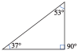
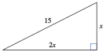
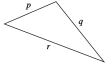
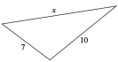

Section A.11 Facts from Geometry
In this section, we review some information you will need from geometry. You are already familiar with the formulas for the area and perimeter of common geometric figures; you can find these formulas in the reference section
Geometry formulas.
Subsection Right Triangles and the Pythagorean Theorem
A right triangle is a triangle in which one of the angles is a right angle, or \(90\degree\text{.}\) Because the sum of the three angles in any triangle is \(180\degree\text{,}\) this means that the other two angles in a right triangle must have a sum of \(180\degree-90\degree\text{,}\) or \(90\degree\text{.}\) For instance, if we know that one of the angles in a right triangle is \(37\degree\text{,}\) then the remaining angle must be \(90\degree-37\degree\text{,}\) or \(53\degree\text{,}\) as shown at right.

Example A.97.
In the right triangle shown at right, the medium-sized angle is \(15\degree\) less than twice the smallest angle. Find the sizes of the three angles.
Solution.
- Step 1
Let \(x\) stand for the size of the smallest angle. Then the medium-sized angle must be \(2x-15\text{.}\)
- Step 2
Because the right angle is the largest angle, the sum of the smallest and medium-sized angles must be the remaining \(90\degree\text{.}\) Thus,
\begin{equation*}
x + (2x - 15) = 90
\end{equation*}
- Step 3
Solve the equation. Begin by simplifying the left side.
\begin{align*}
3x - 15 \amp = 90\amp\amp\blert{\text{Add 15 to both sides.}} \\
3x \amp = 105\amp\amp\blert{\text{Divide both sides by 3.}}\\
x \amp = 35
\end{align*}
- Step 4
The smallest angle is \(35\degree\text{,}\) and the medium-sized angle is \(2(35\degree) -15\degree\text{,}\) or \(55\degree\text{.}\)
In a right triangle, the longest side is opposite the right angle and is called the hypotenuse. Ordinarily, even if we know the lengths of two sides of a triangle, it is not easy to find the length of the third side (to solve this problem we need trigonometry), but for the special case of a right triangle, there is an equation that relates the lengths of the three sides. This property of right triangles was known to many ancient cultures, and we know it today by the name of a Greek mathematician, Pythagoras, who provided a proof of the result.
Pythagorean Theorem.
In a right triangle, if \(c\) stands for the length of the hypotenuse and \(a\) and \(b\) stand for the lengths of the two sides, then
\begin{equation*}
a^2 + b^2 = c^2
\end{equation*}
Example A.98.
The hypotenuse of a right triangle is \(15\) feet long. The third side is twice the length of the shortest side. Find the lengths of the other 2 sides.

Solution.
- Step 1
Let \(x\) represent the length of the shortest side, so that the third side has length \(2x\text{.}\)
- Step 2
Substituting these expressions into the Pythagorean theorem, we find
\begin{equation*}
x^2+(2x)^2=15^2
\end{equation*}
- Step 3
This is a quadratic equation with no linear term, so we simplify and then isolate \(x^2\text{.}\)
\begin{align*}
x^2+4x^2\amp =225\amp\amp\blert{\text{Combine like terms.}} \\
5x^2\amp = 225\amp\amp\blert{\text{Divide both sides by 5.}} \\
x^2\amp = 45
\end{align*}
Taking square roots of both sides yields
\begin{equation*}
x=\pm\sqrt{45}\approx\pm 6.708203932
\end{equation*}
- Step 4
Because a length must be a positive number, the shortest side has length approximately \(6.71\) feet, and the third side has length \(2 (6.71)\text{,}\) or approximately \(13.42\) feet.
Subsection Isosceles and Equilateral Triangles
Recall also that an isosceles triangle is one that has at least two sides of equal length. In an isosceles triangle, the angles opposite the equal sides, called the base angles, are equal in measure. In an equilateral triangle, all three sides have equal length, and all three angles have equal measure.
Subsection The Triangle Inequality
The longest side in a triangle is always opposite the largest angle, and the shortest side is opposite the smallest angle.
It is also true that the sum of the lengths of any two sides of a triangle must be greater than the third side, or else the two sides will not meet to form a triangle! This fact is called the triangle inequality.
In the triangle at right, we must have that \(p + q \gt r\text{,}\) where \(p\text{,}\) \(q\text{,}\) and \(r\) are the lengths of the sides of the triangle.

Now we can use the triangle inequality to discover information about the sides of a triangle.
Example A.99.
Two sides of a triangle have lengths \(7\) inches and \(10\) inches. What can you say about the length of the third side?
Solution.
Let \(x\) represent the length of the third side of the triangle. By the triangle inequality, we must have that
\begin{equation*}
x \lt 7 + 10, ~~~\text{ or }~~~ x \lt 17
\end{equation*}
Looking at another pair of sides, we must also have that
\begin{equation*}
10 \lt x + 7, ~~~\text{ or }~~~ x \gt 3
\end{equation*}

Thus the third side must be greater than \(3\) inches but less than \(17\) inches long.
Subsection Similar Triangles
Two triangles are said to be similar if their corresponding angles are equal. This means that the two triangles will have the same shape but not necessarily the same size. One of the triangles will be an enlargement or a reduction of the other; so their corresponding sides are proportional.
In other words, for similar triangles, the ratios of the corresponding sides are equal.
If any two pairs of corresponding angles of two triangles are equal, then the third pair must also be equal, because in both triangles the sum of the angles is \(180\degree\text{.}\) Thus, to show that two triangles are similar, we need only show that two pairs of angles are equal.
Example A.100.
The roof of an A-frame ski chalet forms an isosceles triangle with the floor. The floor of the chalet is \(24\) feet wide, and the ceiling is \(20\) feet tall at the center. If a loft is built at a height of \(8\) feet from the floor, how wide will the loft be?
Solution.
Look at the diagram of the chalet at right. We can show that \(\Delta ABC\) is similar to \(\Delta ADE\text{.}\) Both triangles include \(\angle A\text{,}\) and because \(\overline{DE}\) is parallel to \(\overline{BC} \text{,}\) \(\angle ADE\) is equal to \(\angle ABC\text{.}\) Thus, the triangles have two pairs of equal angles and are therefore similar triangles.
-
Step 1.
Let \(w\) stand for the width of the loft.
-
Step 2.
First note that if \(FG = 8\text{,}\) then \(AF = 12\text{.}\) Because \(\Delta ABC\) is similar to \(\Delta ADE\text{,}\) the ratios of their corresponding sides (or corresponding altitudes) are equal. In particular,
\begin{equation*}
\frac{w}{24}=\frac{12}{20}
\end{equation*}
-
Step 3.
Solve the proportion for \(w\text{.}\) Begin by cross-multiplying.
\begin{align*}
20w \amp = (12)(24)\amp\amp\blert{\text{Apply the fundamental principle.}}\\
w \amp = \frac{288}{20}= 14.4\amp\amp\blert{\text{Divide by 20.}}
\end{align*}
-
Step 4.
The floor of the loft will be \(14.4\) feet wide.
Subsection Volume and Surface Area
The volume of a three-dimensional object measures its capacity, or how much space it encloses. Volume is measured in cubic units, such as cubic inches or cubic meters.
The volume of a rectangular prism, or box, is given by the product of its length, width, and height. For example, the volume of the box of length \(4\) inches, width \(3\) inches, and height \(2\) inches shown at right is
\begin{equation*}
V = lwh = 4(3)(2) = 24 \text{ cubic inches}
\end{equation*}
Formulas for the volumes of other common objects can be found inside the front cover of the book.
Example A.101.
A cylindrical can must have a height of \(6\) inches, but it can have any reasonable radius.
Write an algebraic expression for the volume of the can in terms of its radius.
If the volume of the can should be approximately \(170\) cubic inches, what should its radius be?
Solution.
The formula for the volume of a right circular cylinder is \(V = \pi r^2h\text{.}\) If the height of the cylinder is \(6\) inches, then \(V = \pi r^2 (6)\text{,}\) or \(V = 6\pi r^2\text{.}\)
-
Substitute \(170\) for \(V\) and solve for \(r\text{.}\)
\begin{align*}
170 \amp = 6\pi r^2\amp\amp \blert{\text{Divide both sides by }6\pi.}\\
r^2 \amp = \frac{170}{6\pi} \amp\amp\blert{\text{Take square roots.}}\\
r \amp = \sqrt{\frac{170}{6\pi}}\approx 3.00312
\end{align*}
Thus, the radius of the can should be approximately \(3\) inches. A calculator keying sequence for the expression above is
\(\qquad\qquad \) 2nd x^2 ( \(170\) ( \(6\) ) ) ENTER
The surface area of a solid object is the sum of the areas of all the exterior faces of the object. It measures the amount of paper that would be needed to cover the object entirely. Since it is an area, it is measured in square units.
Example A.102.
Write a formula for the surface area of a closed box in terms of its length, width, and height.
Solution.
The box has six sides; we must find the area of each side and add them.
The top and bottom of the box each have area \(lw\text{,}\) so together they contribute \(2lw\) to the surface area.
The back and front of the box each have area \(lh\text{,}\) so they contribute \(2lh\) to the surface area.
Finally, the left and right sides of the box each have area \(wh\text{,}\) so they add \(2wh\) to the surface area.
Thus, the total surface area is
\begin{equation*}
S = 2lw + 2lh + 2wh
\end{equation*}
Subsection The Distance Formula
By using the Pythagorean theorem, we can derive a formula for the distance between two points, \(P_1\) and \(P_2\text{,}\) in terms of their coordinates. We first label a right triangle, as we did in the example above. Draw a horizontal line through \(P_1\) and a vertical line through \(P_2\text{.}\) These lines meet at a point \(P_3\text{,}\) as shown below. The \(x\)-coordinate of \(P_3\) is the same as the \(x\)-coordinate of \(P_2\text{,}\) and the \(y\)-coordinate of \(P_3\) is the same as the \(y\)-coordinate of \(P_1\text{.}\) Thus, the coordinates of \(P_3\) are \((x_2, y_1)\text{.}\)
The distance between
\(P_1\) and
\(P_3\) is
\(\abs{x_2-x_1}\) , and the distance between
\(P_2\) and
\(P_3\) is
\(\abs{y_2-y_1} \text{.}\) (See
Section2.5 to review distance and absolute value.)
These two numbers are the lengths of the legs of the right triangle. The length of the hypotenuse is the distance between \(P_1\) and \(P_2\text{,}\) which we will call \(d\text{.}\) By the Pythagorean theorem,
\begin{equation*}
d^2 = (x_2 - x_1)^2 + (y_2 - y_1)^2
\end{equation*}
Taking the (positive) square root of each side of this equation gives us the distance formula.
Distance Formula.
The distance \(d\) between points \(P_1(x_1, y_1)\) and \(P_2(x_2, y_2)\) is
\begin{equation*}
d=\sqrt{(x_2 - x_1)^2 + (y_2 - y_1)^2}
\end{equation*}
Example A.103.
Find the distance between \((2, -1)\) and \((4, 3)\)
Subsection The Midpoint Formula
If we know the coordinates of two points, we can calculate the coordinates of the point halfway between them using the midpoint formula. Each coordinate of the midpoint is the average of the corresponding coordinates of the two points.
Midpoint Formula.
The midpoint of the line segment joining the points \(P_1(x_1, y_1)\) and \(P_2(x_2, y_2)\) is the point \(M(\overline{x}, \overline{y})\text{,}\) where
\begin{equation*}
\overline{x} = \frac{x_1 + x_2}{2} ~~~\text{ and }~~~\overline{y} = \frac{y_1 + y_2}{2}
\end{equation*}
Example A.105.
Find the midpoint of the line segment joining the points \((-2, 1)\) and \((4, 3)\text{.}\)
Solution.
Substitute \((-2, 1)\) for \((x_1, y_1)\) and \((4, 3)\) for \((x_2, y_2)\) in the midpoint formula to obtain
\begin{align*}
\overline{x} \amp= \frac{x_1 + x_2}{2}=\frac{-2+4}{2}=1\amp\amp\text{and}\\
\overline{y} \amp= \frac{y_1 + y_2}{2}=\frac{1+3}{2}=2
\end{align*}
The midpoint of the segment is the point \((\overline{x}, \overline{y}) = (1, 2)\text{.}\)
Subsection Circles
A circle is the set of all points in a plane that lie at a given distance, called the radius, from a fixed point called the center.
We can use the distance formula to find an equation for a circle. First consider the circle (a) below, whose center is the origin, \((0, 0)\text{.}\)
The distance from the origin to any point \(P(x, y)\) on the circle is \(r\text{.}\) Therefore,
\begin{equation*}
\sqrt{(x - 0)^2 + (y - 0)^2} = r
\end{equation*}
Or, squaring both sides,
\begin{equation*}
(x - 0)^2 + (y - 0)^2 = r^2
\end{equation*}
Thus, the equation for a circle of radius \(r\) centered at the origin is
\begin{equation*}
x^2 + y^2 = r^2
\end{equation*}
Now consider the circle (b) above, whose center is the point \((h, k)\text{.}\) Every point \(P(x, y)\) on the circle lies a distance \(r\) from \((h, k)\text{,}\) so the equation of the circle is given by the following formula.
Standard Form for a Circle.
The equation for a circle of radius \(r\) centered at the point \((h, k)\) is
\begin{equation*}
(x - h)^2 + (y - k)^2 = r^2
\end{equation*}
This equation is the standard form for a circle of radius \(r\) with center at \((h, k)\text{.}\) It is easy to graph a circle if its equation is given in standard form.
Example A.106.
Graph the circles.
\(\displaystyle (x - 2)^2 + (y + 3)^2 = 16\)
\(\displaystyle x^2 + (y - 4)^2 = 7\)
Solution.
-
The graph of \((x - 2)^2 + (y + 3)^2 = 16\) is a circle with radius \(4\) and center at \((2, -3)\text{.}\) To sketch the graph, first locate the center of the circle. (The center is not part of the graph of the circle.)
From the center, move a distance of \(4\) units (the radius of the circle) in each of four directions: up, down, left, and right. This locates four points that lie on the circle: \((2, 1)\text{,}\) \((2, -7)\text{,}\) \((-2, -3)\text{,}\) and \((6, -3)\text{.}\) Sketch the circle through these four points.
The graph of \(x^2 + (y - 4)^2 = 7\) is a circle with radius \(\sqrt{7} \) and center at \((0, 4)\text{.}\) From the center, move \(\sqrt{7} \text{,}\) or approximately \(2.6\text{,}\) units in each of the four coordinate directions to obtain the points \((0, 6.6)\text{,}\) \((0, 1.4)\text{,}\) \((-2.6, 4)\text{,}\) and \((2.6, 4)\text{.}\) Sketch the circle through these four points.
We can write an equation for any circle if we can find its center and radius.
Example A.107.
Find an equation for the circle whose diameter has endpoints \((7, 5)\) and \((1,-1)\text{.}\)
Solution.
The center of the circle is the midpoint of its diameter. Use the midpoint formula to find the center:
\begin{gather*}
h = \overline{x} = \frac{7 + 1}{2}= 4\\
k = \overline{y} = \frac{ 5 - 1}{2}= 2
\end{gather*}
Thus, the center is the point \((h, k) = (4, 2)\text{.}\) The radius is the distance from the center to either of the endpoints of the diameter, say the point \((7, 5)\text{.}\) Use the distance formula with the points \((7, 5)\) and \((4, 2)\) to find the radius.
\begin{align*}
r\amp =\sqrt{(7 - 4)^2 + (5 - 2)^2}\\
\amp = \sqrt{3^2 + 3^2}=\sqrt{18}
\end{align*}
Finally, substitute \(4\) for \(h\) and \(2\) for \(k\) (the coordinates of the center) and \(\sqrt{18} \) for \(4\) (the radius) into the standard form to obtain
\begin{align*}
(x - h)^2 + (y - k)^2 \amp= r^2\\
(x - 4)^2 + (y - 2)^2 \amp = 18
\end{align*}
Subsection Section Summary
Subsubsection Vocabulary
Look up the definitions of new terms in the Glossary.
Right triangle
Circle
Surface area
Isosceles
Hypotenuse
Center
Volume
Triangle inequality
Equilateral
Subsubsection SKILLS
Practice each skill in the exercises listed.
Use properties of triangles: #110
Use similar triangles to solve problems: #1116
Calculate volumes and surface areas: #1720
Use the distance and midpoint formulas: #2132
Sketch a circle: #3340
Find the equation for a circle: #4146
Exercises Exercises A.11
Exercise Group.
For Problems 1-10, use properties of triangles to answer the questions.
1.
One angle of a triangle is \(10\degree\) larger than another, and the third angle is \(29\degree\) larger than the smallest. How large is each angle?
2.
One angle of a triangle is twice as large as the second angle, and the third angle is \(10\degree\) less than the larger of the other two. How large is each angle?
3.
One acute angle of a right triangle is twice the other acute angle. How large is each acute angle?
4.
One acute angle of a right triangle is \(10\degree\) less than three times the other acute angle. How large is each acute angle?
5.
The vertex angle of an isosceles triangle is \(20\degree\) less than the sum of the equal angles. How large is each angle?
6.
The vertex angle of an isosceles triangle is \(30\degree\) less than one of the equal angles. How large is each angle?
7.
The perimeter of an isosceles triangle is 42 centimeters and its base is 12 centimeters long. How long are the equal sides?
8.
The altitude of an equilateral triangle is \(\dfrac{\sqrt{3}}{2} \) times its base. If the perimeter of an equilateral triangle is 18 inches, what is its area?
9.
If two sides of a triangle are 6 feet and 10 feet long, what can you say about the length of the third side?
10.
If one of the equal sides of an isosceles triangle is 8 millimeters long, what can you say about the length of the base?
Exercise Group.
For Problems 11-16, use properties of similar triangles to answer the questions.
11.
A 6-foot man stands 12 feet from a lamppost. His shadow is 9 feet long. How tall is the lamppost?
12.
A rock climber estimates the height of a cliff she plans to scale as follows: She places a mirror on the ground so that she can just see the top of the cliff in the mirror while she stands straight. (The angles 1 and 2 formed by the light rays are equal.) She then measures the distance to the mirror (2 feet) and the distance from the mirror to the base of the cliff. If she is 5 feet 6 inches tall, how high is the cliff?
13.
A conical tank is 12 feet deep and the diameter of the top is 8 feet. If the tank is filled with water to a depth of 7 feet, what is the area of the exposed surface of the water?
14.
A florist fits a cylindrical piece of foam into a conical vase that is 10 inches high and measures 8 inches across the top. If the radius of the foam cylinder is 212 inches, how tall should it be just to reach the top of the vase?
15.
To measure the distance across a river, stand at point \(A\) and sight across the river to a convenient landmark at \(B\text{.}\) Then measure the distances \(AC\text{,}\) \(CD\text{,}\) and \(DE\text{.}\) If \(AC=20\) feet, \(CD =13\) feet, and \(DE = 58\) feet, how wide is the river?
16.
To measure the distance \(EC\) across a lake, stand at point \(A\) and sight point \(C\) across the lake, then mark point \(B\text{.}\) Then sight to point \(E\) and mark point \(D\) so that \(DB\) is parallel to \(CE\text{.}\) If \(AD = 25\) yards, \(AE = 60\) yards, and \(BD = 30\) yards, how wide is the lake?
Exercise Group.
For Problems 17-20, use formulas to find volumes and surface areas.
17.
How much helium (in cubic meters) is needed to inflate a spherical balloon to a radius of 1.2 meters?
How much gelatin (in square centimeters) is needed to coat a spherical pill whose radius is 0.7 centimeter?
18.
How much storage space is there in a rectangular box whose length is 12.3 inches, whose width is 4 inches, and whose height is 7.3 inches?
How much marine sealer will be needed to paint a rectangular wooden storage locker with length 6.2 feet, width 5.8 feet, and height 2.6 feet?
19.
How much grain can be stored in a cylindrical silo whose radius is 6 meters and whose height is 23.2 meters?
How much paint is needed to cover a cylindrical storage drum whose radius is 15.3 inches and whose height is 4.5 inches?
20.
A conical pile of sand is 8.1 feet high and has a radius of 4.6 feet. How much sand is in the pile?
How much plastic is needed to line a conical funnel with a radius of 16 centimeters and a slant height of 42 centimeters?
Exercise Group.
For Problems 21-26, find the distance between the given pairs of points, and find the midpoint of the segment joining them.
21.
\((1,1), ~(4,5)\)
22.
\((-1,1), ~(5,9)\)
23.
\((2,-3), ~(-2,-1)\)
24.
\((5,-4), ~(-1,1)\)
25.
\((3,5), ~(-2,5)\)
26.
\((-2,-5), ~(-2,3)\)
27.
Leanne is sailing 3 miles west and 5 miles south of the harbor. She heads directly toward an island that is 8 miles west and 7 miles north of the harbor.
How far is Leanne from the island?
How far will Leanne be from the harbor when she is halfway to the island?
28.
Dominic is 100 meters east and 250 meters north of Kristy. He is walking directly toward a tree that is 220 meters east and 90 meters north of Kristy.
How far is Dominic from the tree?
How far will Dominic be from the Kristy when he is halfway to the tree?
Exercise Group.
For Problems 29-32, sketch a diagram on graph paper, then solve the problem.
29.
Find the perimeter of the triangle with vertices \((10, 1), ~(3, 1), ~(5, 9).\)
30.
Find the perimeter of the triangle with vertices \((-1,5)\text{,}\) \(~(8,-7)\text{,}\) \(~(4,1).\)
31.
Show that the point \(C(\sqrt{5},2+\sqrt{5} )\) is the same distance from \(A (2, 0)\) and \(B (-2, 4)\text{.}\)
32.
Show that the points \((-2,1), ~(0,-1) \text{,}\) and \((\sqrt{3}-1,\sqrt{3}) \) are the vertices of an equilateral triangle.
Exercise Group.
For Problems 33-40, graph the equation.
33.
\(x^2+y^2=25\)
34.
\(x^2+y^2=16\)
35.
\(4x^2+4y^2=16\)
36.
\(2x^2+2y^2=18\)
37.
\((x-4)^2+(y+2)^2=9\)
38.
\((x-1)^2+(y-3)^2=16\)
39.
\((x+3)^2+y^2=10\)
40.
\(x^2+(y+4)^2=12\)
Exercise Group.
For Problems 41-46, write an equation for the circle with the given properties.
41.
Center at \((-2, 5)\text{,}\) radius \(2\sqrt{3} \text{.}\)
42.
Center at \((4,-3)\text{,}\) radius \(2\sqrt{6} \text{.}\)
43.
Center at \(\left(\dfrac{3}{2}, -4\right)\text{,}\) one point on the cirlce \((4,-3) \text{.}\)
44.
Center at \(\left(\dfrac{-3}{2}, \dfrac{-1}{2} \right)\text{,}\) one point on the cirlce \((-4,-2) \text{.}\)
45.
Endpoints of a diameter at \((1, 5)\) and \((3,-1)\text{.}\)
46.
Endpoints of a diameter at \((3,6)\) and \((-5,2)\text{.}\)